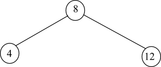
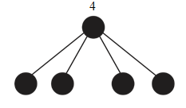

Build a binary search tree of height 3 with the keys {1, 2, 3, 4, 5, 6, 7, 8, 9, 10, 11, 12, 13, 14, 15}, insert the keys in the order {8, 4, 12, 2, 6, 10, 14, 1, 3, 5, 7, 9, 11, 13, 15}.
Building binary search tree:
1)
2)
3)

4)
5)
6)
7)
8)
9)
10)
11)
12)
13)
14)
15)
Now, add the NIL leaves to the above binary search tree of height 3 as follows:
Color the above binary search tree such that the tree has black-height of 2 as follows:
Color the binary search tree such that the tree has black-height of 4 as follows:

A red-black tree is a binary search tree with each node colored black or red. In addition, the red-black tree must satisfy the following properties:
1. Every node must be colored in red or black.
2. The root node must be in black.
3. Every leaf (NULL) node must be black.
4. If a node is red, then both children’s of it must be black.
5. Every path from a node to a leaf must contain the same number of black nodes.
The following is the given red-black tree with black-heights of each node:
Execute TREE-INSERT with the key 36 on the above tree. The resulting tree is as follows and it is not a red-black tree, because it violates the 4th red-black tree property (i.e. if a node is red, then both children’s of it must be black.).
Even though the new node is colored black, the tree is not a red-black tree, because the black-height property is violated.
Red Black Tree:
A binary search tree is called as a red-black tree, if it satisfies the following properties:
1. Every node in the tree is either red or black in color.
2. The root of tree must be black.
3. The color of the every leaf (NIL) must be black.
4. If the color of a node is red, then the color of its both children must be black.
5. The number of black nodes along all the simple paths from any node to leaves must be same.
Relaxed Red-Black tree:
Now, consider a binary tree that follows the red-black tree properties 1, 3, 4, and 5. Such a tree is called relaxed red-Black tree. Since the relaxed red-black tree does not satisfy the red-black tree property 2, the root node is either red or black.
Changing the color of the root node:
Consider a relaxed tree T with red root node. Since, the relaxed red-black tree follows the all the red-black properties except 2nd property, root node has two black children and T has balanced black heights.
• If the color of the root node is changed from red to black, the black heights are remained same.
• Moreover root has two black children. This doesn’t violate any 5 properties of red-black tree.
• That is, the resulting tree satisfies all the red-black tree properties. Thus, the resulting tree is a red-black tree.
Example:
Consider the following relaxed Red- Black tree whose root node is red.
Now, change the color of the root node from red to black in the above relaxed Red- Black tree. Then the resulting tree is as follows:
Obviously the above tree is a red-black tree, because the above tree satisfies all the properties of red-black tree.
Hence, the resulting tree T , after changing the color of the root node of a relaxed red-black tree T with red root node to black, is a red-black tree.
Absorbing red nodes:
Consider a simple red-black tree that has a black root node with two black children:
In the above Red-Black tree, the root node has 2 black child nodes. The degree of root node is 2.
Since there are no red nodes to absorb, the above red-black tree remains same as follows:
Therefore, after absorbing the red nodes, the degree of a black node with two black children remains 2.
Consider a red-black tree that has a black root node with one black child and one red child:
The above Red-Black tree has a black root that has 1 black and 1 red child nodes. The degree of root node is 2.
Now absorb the red node into its black parent. Then the resulting tree is as follows:

The root node in the above resulting tree has 3 back child nodes. The degree of root node becomes 3.
Therefore, after absorbing the red nodes, the degree of a black node with one black child and one red child is 3.
Consider a simple red-black tree that has a black root node with two red children:
In the above Red-Black tree, the root node has 2 red child nodes. The degree of root node is 2.
Now absorb the two red nodes into its black parent. Then the resulting tree is as follows:

In the above tree, the root node has 4 black child nodes and thus the degree of root node is 4.
Therefore, after absorbing the red nodes, the degree of a black node two red children is 4.
Depth of the all leaves of the resulting tree:
By observation it is cleared that the depth of the all the leaves of the resulting tree is same.
The following two of red-black tree properties enforces constraints on the length of the simple path from a node to a leaf:
• If a node is red, then both its children are black.
• For each node, all simple paths from the node to descendant leave contain the same number of black nodes.
Calculating length of the longest simple path:
• In the shortest simple path, at most all the nodes are black. Therefore, the shortest simple path from any node x is the black-height of that node x (i.e., bh(x)).
• The longest simple path from a node x to a leaf nodes contains alternative black and red nodes. Therefore, the longest simple path is the height of the sub tree with node x as the root or bh(x) + number of red nodes in the longest simple path.
• That is,
The length of the longest path from node x to a leaf node = height(x)
OR
The length of the longest path from node x to a leaf node = bh(x) + number of red nodes in the longest simple path.
• Therefore, height(x) = bh(x) + number of red nodes in the longest simple path.
Since the longest simple path contains alternative black and red nodes, the number of red nodes in the longest simple path is not more than.
i.e. Number of red nodes in the longest path ≤
The length of the longest path ≤ .
The length of the longest path ≤ length of the shortest simple path
Hence, the length of the longest simple path from the node x is twice the length of the shortest simple path.
A red-black tree is a binary search tree that takes one extra bit of storage per node to specify the color of the node as either RED or BLACK.
Red-black tree properties:
1. Every node can be either red or black.
2. The root node must be black.
3. All leaves are black.
4. If a parent node is red, then both children must be black.
5. Every path from a node to a leaf must contain the same number of black nodes.
Consider a red-black tree with black height as k. If each and every node is black, the maximum number of internal nodes is. Considering the property 4, and if there are alternative nodes as black, the height will be 2k and the maximum number of internal nodes is.
As proved in lemma 13.1, the minimum number of internal nodes of the sub tree of x is .If the height of any node x is k, then the sub tree of x will contain minimum of internal nodes..
Hence the largest possible number of internal nodes is and the smallest possible number of internal nodes is
Red-black tree with largest red and black internal nodes ratio:
Consider a red-black tree T that is a complete balanced binary tree. The ration of red internal nodes to black is largest, if T has red and black nodes at alternate levels.
Consider the following Red-Black tree that has maximum red to black internal node ratio:
The above Red-Black tree contains 5 black and 10 red nodes. The ratio of red to black nodes becomes:
Therefore, the maximum ratio of red to black internal nodes in a Red-Black tree is 2 .
Red-black tree with smallest red and black internal nodes ratio:
A red-black tree that has no red nodes has the smallest red to black internal nodes ratio.
Consider the following Red-Black tree that has minimum red to black internal node ratio:
The above tree contains 0 red nodes and 15 black nodes.
Thus the red internal nodes to black internal nodes ratio is as follows:
Hence, the minimum ratio of red internal nodes to black internal nodes in a Red-Black tree is 0 .